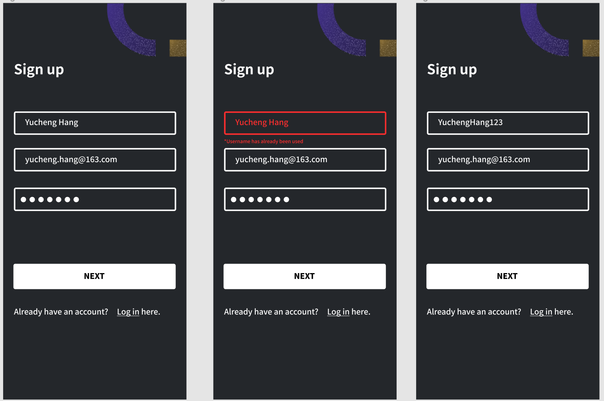

ArtNest
Overview
The artnest is a communication platform for student and entry level artists to gather together with people in the same industry and create unexpected collisions of ideas.
Users can gain critique of their artwork, get rich resources to solve their confusions and questions and join various groups to interact with like-minded people and share ideas. It will help them adapt to the atmosphere of debates and critique in the art field and finally be confident with their artwork.
Role
User Research, UI/UX design, Usability Testing
Team
Yucheng Hang (Individual work)
Tool
Adobe Illustrator, Adobe Xd, Figma
INTERACTIVE PROTOTYPE
PERSONAL MOTIVAION
As an entry level UI/UX designer, I found my passion in this field three years ago and started to treat it as my professional field. After that, I was applying for a MFA degree a year ago and now I am trying to find a related job. I personally encountered some frustrating moments during the process. For example, I really want to know someone in the same field as me that can give me some suggestions or advice on career development and learning path. I also expect someone to review and critique my projects and portfolio so that I can be more confident about my work and more competitive in the market. I tried to solve my problems through platforms like Behance, Linkedin and Reddit, however, art and design are a very small branch of them and I cannot find enough resources and information. I am at a loss and sometimes feel lonely during the process of pursuing my dream as a designer.
Therefore I was thinking about creating a communication platform especially for student and entry level artists. They are encouraged to interact with each other by posting and answering their confusions and thoughts encountered in career development and gaining peer critique of their artwork.
DESIGN HYPOTHESIS
I believe that creating a communication platform for student artists/entry level artists to post and answer their confusions and thoughts encountered in career development and gain peer critique of their artwork will help them adapt to the atmosphere of debates and critique and finally be confident with their artwork.
RESEARCH PROCESS
Questionnaire
I created a google form and invited 25 people to do this survey. They are all art-related majors, some of them have official working experience while others are currently undergraduate or graduate students.
Selected questionnaire results
From the survey, I found that my personal experience and feeling is actually a common problem for all kinds of artists. Most of the artists believe that it is harder for them to get resources in career development and learning path compared with other more popular majors. Also, most student artists/ entry level artists are not that confident about their portfolios and they have the desire to find more resources or suggestions from others in the same field as them.
Interview
I conducted a 20mins interview with 5 of my friends and former colleagues. These interviewees came from different age ranges, gender and art backgrounds, from students to employees, from native people to foreigners.
Persona
Based on the survey and interview results, I build two personas.
Problem Framing
By digging into the pain points of personas, I framed the main problems of my users.
1. Hard to find enough resources to get objective and comprehensive critiques and evaluations of their work.
2. Compared with other popular majors, lack of a specialized place for artists to post questions and confusions about their professional skills, artwork and career development.
3. Couldn’t find a space for them to share and discuss with people in the same field about some insights and thoughts related to their study and work.
4. Easy to feel alone and at a loss since there are not enough resources in the market.
Restructure Design Statement
I believe that creates a communication platform for student and entry-level artists to gain peer critique of their artwork, get rich resources to solve their confusions and questions, and join various groups to interact with like-minded people will help them adapt to the atmosphere of debates and critique and finally be confident with their work.
Key Features
Based on all the research and analysis, I concluded with four key features.
1. Give and gain peer critique of user’s artwork/portfolio.
2. Post and answer questions.
3. Join various groups/communities and communicate with other artists.
4. Promote customized articles and questions to users based on their interests.
User Flow
According to the key features, I made several user flows align with each key feature by using the shorthand method.
User Stories
Moving forward, I created a set of user stories. This helped me delineate the features and abilities of the product.
DESIGN PROCESS
Wireframes
Based on the guideline of user stories and user flows, I created a low fidelity wireframe.
Critique: After receiving helpful feedback from my peers, I realized that the app is a little bit overwhelming because it covers too many aspects. I need to narrow it down. They also pointed out the direct feedback function (critique & asking questions) is the most outstanding and innovative part of the app. Therefore, I decided to focus strongly on the direct feedback part and deleted the long-form writing/blogging function.
High fidelity Prototype
After implementing the feedback I received about wireframes, I designed a high fidelity prototype.
Hi-fi prototype(sign up process)
Hi-fi prototype(key features screen)
TESTING PROCESS
Heuristic Evaluation
I invited 5 evaluators to give a heuristic evaluation of the prototype. Each evaluator individually went through the interface twice and compared them with Jakob’s 10 Usability Heuristics. Below are the results and solutions.
#1:Voliate Visibility of system status
Since I have multi-step questions when signing up, users would feel confused and had no idea about how long the sign-up process is. Therefore, I added a stepper component as the visual cue to keep users informed about the current status.
Revised sign up process
#2:Voliate Recognition rather than recall
Another feedback I got was adding loading and confirmation status. Therefore I add the loading and confirmation screen in “posting your work”, “creating a group” and “ask a question” function.
#3 Voliate Help users recognize, diagnose, and recover from errors
One of the evaluators mentioned that my app is lacking error messages. Therefore, I used bold, red text to indicate errors to users.
Thank you for reading :)
All Works


© Designed by Yucheng Hang